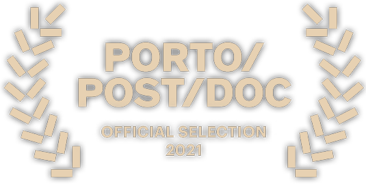
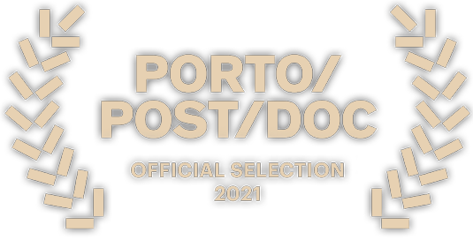

Amélia
Amélia é uma curta-metragem que mistura animação, fotografia e vídeo e surge a partir da necessidade de recuperar narrativas relacionadas com o estatuto da mulher durante o período do Estado Novo e, em particular, da sua ligação com a costura.
O ofício da costura era algo muito associado ao trabalho da mulher portuguesa da época, uma vez que era dos pouco trabalhos acessíveis a uma população rural, pobre e, em grande parte, analfabeta ou com pouca escolaridade, para além de ser associada desde sempre ao trabalho “feminino”.
Assim, o projeto parte do testemunho da minha avó materna sobre a importância da costura na sua vida e sobre como se relaciona com a sua posição social e política, procurando dar visibilidade à narrativa de várias mulheres da sua geração, através da micro-narrativa documental.
O ensaio mistura fotografias, num processo de colagem digital complementado pela animação e o vídeo.


 
